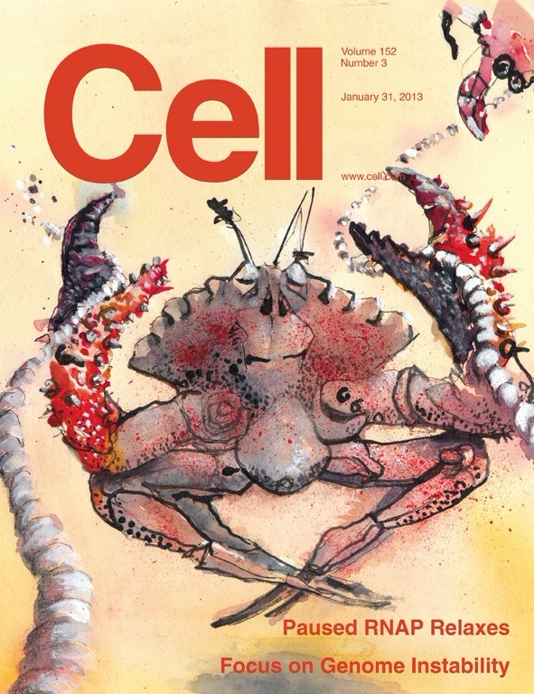

Albert Einstein added an article to the collection World Wanderer
Yesterday | 12:34 P.M

What is the smallest thing in the universe?
Find newest published and most popular research articles on Jijitang, like or save pieces that you think are great!Find newest published and most popular research articles on Jijitang, like or save pieces that you think are great!
READ MORESave this Note
|  | Business dfasdfasdf sdf | Move Out |
| Business sd fasd fa df asdf asdf asdf asd fasd fasdf asd | Move Out | |
| Business ds fasd fasdf asd fas | Move Out |

Brahim Senhaji added an article to the collection World Wanderer
Yesterday | 12:34 P.M

What is the smallest thing in the universe?
Find newest published and most popular research articles on Jijitang, like or save pieces that you think are great!Find newest published and most popular research articles on Jijitang, like or save pieces that you think are great!
READ MORESave this Note
| Business dfasdfasdf sdf | Move Out | |
| Business sd fasd fa df asdf asdf asdf asd fasd fasdf asd | Move Out | |
| Business ds fasd fasdf asd fas | Move Out |